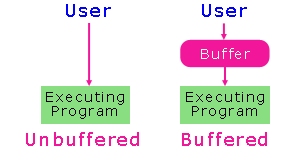
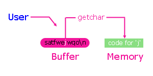
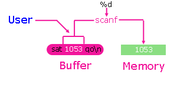

Module E - Standard Libraries
Input and Validation
Design algorithms to solve small problems using robust user input validation.
Types of Input |
getchar |
scanf |
Validation |
In-Class Practice |
Exercises
Each C compiler comes with its own copy of the C standard libraries.
These libraries include functions for accepting data values from
the standard input stream (typically, the keyboard).
The system file <stdio.h> contains the
prototypes for these functions.
Types of Input
Input to a program may be unbuffered or buffered.
A fully interactive program uses unbuffered input.
The program can respond to each and every keystroke
directly.
Buffered input enables data editing before
submission to a program. That is, the
program accepts one complete input record at a time
rather than one keystroke at a time.
A buffer is a region of memory that collects
and holds data temporarily.

We focus on buffered input is this course.
Buffered Input
The input buffer empties when it
receives a newline character ('\n')
or is filled. In other words, to
transfer the contents of a buffer to a program
the user must press the '\n'
character (or fill the buffer completely).
Two C functions provide buffered input facilities
on the standard input stream:
getchar
getchar retrieves a single
character from the standard input stream buffer
without translating the input.
The prototype for getchar is
int getchar ( void );
getchar returns either
- the character code for the retrieved character or
- EOF.

The character code depends upon the encoding sequence
used on the host machine. Typically, this is
the ASCII collating sequence.
For example, if the encoding sequence
is ASCII and the next character in the buffer is
j, then the value
returned by getchar() is 106.
EOF is the symbolic name
for end of data. The
header file <stdio.h>
typically assigns the value of -1
to EOF.
On Windows systems, the user enters the end of
data character by pressing Ctrl-Z, while on UNIX
systems, by pressing Ctrl-D.
Clearing the buffer
To synchronize user input with program
execution, we clear the input buffer of any characters
that the user has entered and have remained in the buffer.
For example, we use the getchar function
/* clear empties input buffer */
void clear (void) {
while ( getchar() != '\n' )
; /* null statement intentional */
}
|
The iteration continues until getchar
reads a '\n', at which point the buffer is
empty.
Pausing Execution
To pause the execution of a program at a
certain point, we can insert the
statements
printf("Press enter to continue ...");
while (getchar() != '\n')
; /* null statement intentional */
|
The
program will remain idle, until the user presses '\n'.
scanf
scanf retrieves
data values from the standard input stream buffer under
format control. The syntax of a call to
scanf is
scanf( format string, &identifier , ... )
Here, the ellipsis identify optional arguments.
The format string is a literal string that contains
one or more of the conversion specifiers listed below.
scanf extracts data values from
the standard input stream buffer until scanf has
- interpreted and processed the entire format string,
- found a character that does not meet the next conversion specification
in the format string, in which case
scanf leaves the offending character in the buffer,
or
- emptied the buffer, in which case scanf
waits until the user adds more data values.
The conversion specifiers describe how
scanf is to
interpret each data value before storing
it in the appropriate address.
We provide as many conversion specifiers
as there are address arguments (see the exception below) in the
call to scanf.

Conversion Specifiers
Each conversion specifier begins with a %
symbol and ends with a conversion character.
The conversion character, which we may preceded by a size
specifier, describes the data type to which scanf
should convert the input field.
| Specifier | Input Value | Use With |
| %c | character | char |
| %d | decimal | char, int, short, long, long long |
| %u | decimal | unsigned int, char, short, long, long long |
| %o | octal | unsigned int, char, short, long, long long |
| %x | hexadecimal | unsigned int, char, short, long, long long |
| %f | floating-point | float, double, long double |
For example, the following code converts the input into an int
and a float:
int items;
float price;
printf("Enter items, price : ");
scanf("%d%f", &items, &price);
|
Enter items, price : 4 39.99
|
scanf treats the whitespace
between the input values as a separator.
There is no need to place a blank character
between the conversion specifiers.
| items | price |
| 4 Bytes | 4 Bytes |
| 4 | 39.99 |
| 0x2ff2fed8 | 0x2ff2fedc |
Between the % and the
conversion character, we may insert
% * width size conversion_character
- * suppresses storage of the data value
- width - sets the maximum number of characters to be read
- size - identifies the size of data type where the value is to be stored.
For integer values:
| Size Specifier | Use With |
| none | int |
| hh | char |
| h | short |
| l | long |
| ll | long long |
For floating-point values:
| Size Specifier | Use With |
| none | float |
| l | double |
| L | long double |
Each conversion specifier that includes an *
does not have a corresponding address in the scanf argument list.
This is the exception to the matching conversion-specifier/address-argument
rule.
Non-conversion-specifier characters
Characters in the format string other than conversion
specifiers require precise duplication by the user.
If the format string contains a non conversion specifier
character amd scanf
encounters a character other than that character,
scanf abandons
further interpretation. %%
in the format string reads the %
symbol from the input stream.
A space before a conversion specifier tells scanf
to skip all leading whitespace before performing the next conversion.
scanf skips whitespace automatically
with numeric input and, therefore, a space before a numeric
conversion specifier is redundant. However, a
space preceding the %c
conversion specifier tells scanf
to skip whitespace before reading the next character.
Problems arise with the %c conversion
specifier because scanf only
processes input that it needs and leaves the rest
in the buffer. For example, on reading an integer
value, scanf leaves the newline
character in the buffer.
scanf
can stall on character input due to an unprocessed
\n from a previous scanf.
For example, the following code produces the output shown
on the right
/* scanf with %c Specification
* scanfc.c
* BTP100
* Oct 20 2005
*/
#include <stdio.h>
int main (void) {
int items;
char tax;
printf("Number of items : ");
scanf("%d", &items);
printf("Tax Status : ");
scanf("%c", &tax); /* ERROR reads \n */
printf("%d items (tax status %c)\n", items, tax);
return 0;
}
|
Number of items : 25
Tax status : 25 items (taxable status
)
|
There are several ways to handle unprocessed \n's
scanf("%d", &itmes);
scanf("%c%c", &junk, &tax); /* store one character in junk first */
scanf("%d", &items);
scanf("%*c%c", &tax); /* swallow one character first */
scanf("%d", &items);
scanf(" %c", &tax); /* skip all whitespace first */
scanf("%d%*c", &items); /* swallow newline */
scanf("%c", &tax);
scanf("%d", &items);
clear(); /* clear the buffer */
scanf("%c", &tax);
"%*c%c" swallows one
character and accepts the next.
" %c" swallows all whitespace
before the next non-whitespace character.
For example,
/* scanf with %c Specification
* scanfc.c
* BTP100
* Oct 20 2005
*/
#include <stdio.h>
int main (void) {
int items;
char tax;
printf("Number of items : ");
scanf("%d", &items);
printf("Tax Status : ");
scanf(" %c", &tax); /* note space before %c */
printf("%d items (tax status %c)\n", items, tax);
return 0;
}
|
Number of items : 25
Tax status : g
25 items (taxable status g)
|
Return Values
scanf returns the number of addresses
successfully filled or EOF.
A return value of
- 0 indicates that scanf did not fill any address,
- 1 indicates that scanf filled the first address successfully,
- 2 indicates that scanf filled the first and second addresses successfully,
- ...
- EOF indicates that scanf did not fill any address
AND encountered an end of data character.
The return code from scanf does not reflect
success of %* conversions
or successful reading of non conversion specifier characters
in the format string.
Validation
We cannot predict how the user
will input the data values: whether the user
will enter them as requested or not. One user
may make a mistake. Another user
may simply try to break the program. In
any event, we write the program so that it traps
all erroneous input, which includes:
- invalid characters
- trailing characters
- out-of-range input
- incorrect number of input fields
We call code that covers each
eventuality robust user validation.
The following program includes a function that contains
robust input validation for integer input
/* Robust Input Validation
* getInt.c
* Oct 6 2004
* BTP100
*/
#include <stdio.h>
int getInt(int min, int max);
void clear(void);
#define MIN 3
#define MAX 15
int main( ) {
int input;
input = getInt(MIN, MAX);
printf("\nProgram accepted %d\n", input);
return 0;
}
/* getInt accepts from the standard input
* stream an int between min and max inclusive,
* returns the value of the int accepted
*/
int getInt(int min, int max) {
int value, keeptrying = 1, rc;
char after;
do {
printf("Enter a whole number\n"
"in the range [%d,%d] : ",
min, max);
rc = scanf("%d%c", &value, &after);
if (rc == 0) {
printf("**No input accepted!**\n\n");
clear();
} else if (after != '\n') {
printf("**Trailing characters!**\n\n");
clear();
} else if (value < min || value > max) {
printf("**Out of range!**\n\n");
} else
keeptrying = 0;
} while (keeptrying == 1);
return value;
}
/* clear empties input buffer of characters */
void clear (void) {
while ( getchar() != '\n' )
; /* null statement intentional */
}
|
Enter a whole number
in the range [3,15] : we34
**No input accepted!**
Enter a whole number
in the range [3,15] : 34.4
**Trailing characters!**
Enter a whole number
in the range [3,15] : 345
**Out of range!**
Enter a whole number
in the range [3,15] : 14
Program accepted 14
|
In-Class Practice
Try the practice problem in Handout 8.
Exercises
- Experiment with different ways of handling an
unprocessed '\n' before reading
a character from the input stream, and
- Read pages 66-70 from Evan Weaver's subject notes.
|